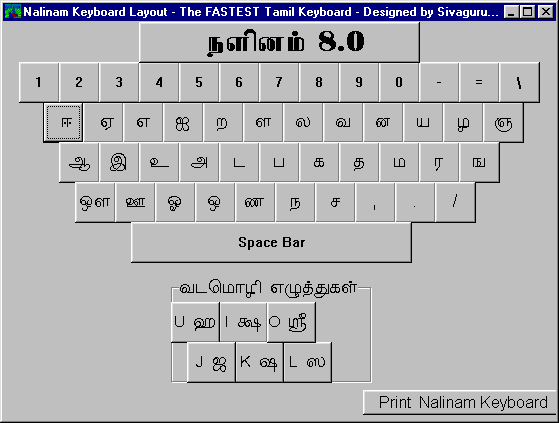

Nalinam 8.0
Tamil/English Word Processor
User Manual
How to install - 5 simple steps and you are ready
Right Click on your mouse here
Choose Save Target as to download the self-extractor to any directory by following the instructions
Click the nalinam8.exe that you downloaded to extract the files in the directory.
You should see 5 files on your desktop
Click the fonts.exe to extract the tamil font files.
Click on the Nalinam icon to type your document
If you don’t see tamil, please reboot your computer
You can now copy Nalinam8.exe to pass to your friends.
How to use
Click the Nalinam8 icon
Click OK when you see the peacock.
You should see the Nalinam keyboard now. Study the keyboard or make a printout for reference. Close the "keyboard window".
You are ready to use Nalinam. Just click on the typing window and start typing. If you’re a first time user you need to play around
How to type in tamil

- Study the Nalinam keyboard layout carefully.
- You can type all the basic tamil characters (consonants and vowels) by simply following the arrangements in the layout.
- If you need to type any "uyirmei" character, just combine the appropriate "mei" (consonant) and "uyir" (vowel) characters.
- If you don't see the following in Tamil, then your tamil fonts are not installed properly. Follow the installation steps above.
Example :
ê + á = êÙ
ì + ó = ìÚ
ë + ä = ˆ
í + å = …í
é + ö = …éÙ
ù + ò = ‡ù
- To type a consonant with a dot/"pulli" on it , type the consonant followed by the "f" key, which
represents the character "
æ".
Example :
ê + æ = ¨
ë + æ = ª
ì + æ = ¦
- If you wish to type in English just press the "F7" key. You can type in tamil again if you press the
same key one more time.
How to use in MS-Word and other programs
This version of Nalinam consists of 7 fonts and one tamil/hindu symbols. You can cut and paste tamil words into any other english-based program including MS-Word.
- Highlight all the tamil/english words in Nalinam
- Click the copy icon in Nalinam
- Minimize the Nalinam program
- Go to MS-Word or any other program
- Click the paste icon. You should see the selected tamil words
- You can now use all the features found in that program
How to get future version of Nalinam
You can visit www.nalinam.com for latest update or e-mail me at nalinam@yahoo.com
Nalinam 2000 will be out soon with many advanced features. It will be the most sophisticated tamil/english word processor in the world with direct access to all windows based program. That means you can type in any program directly. Watch out for the announcement